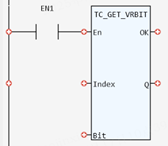

System Function.
Gets the value of a bit of the VR.
|
Index: DINT; |
VR number |
|
Bit: USINT; |
Bit number |
|
Q: SINT; |
-1: Incorrect VR number or Incorrect Bit number 0 or 1: the value of a bit |
This function gets the value of a bit of the VR.
(SINT):=TC_GET_VRBIT(Index:= (DINT), Bit:= (USINT));

Not available.